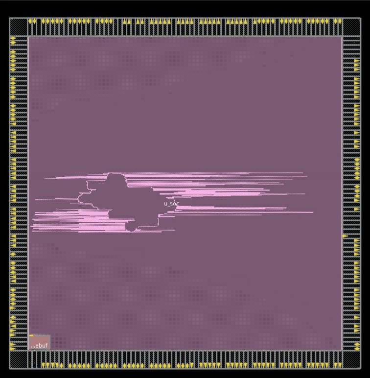
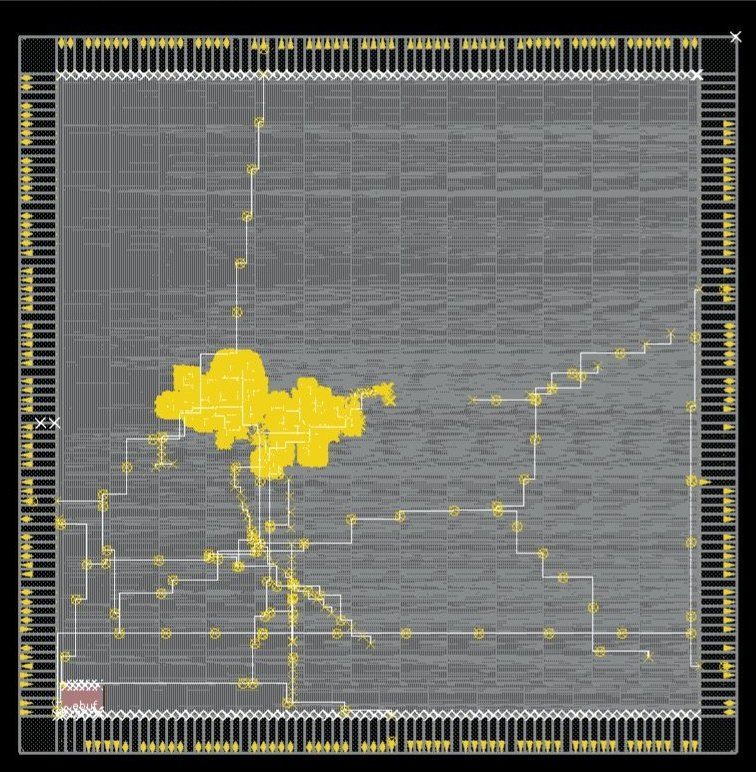
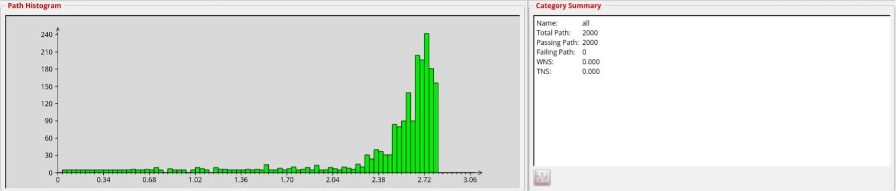
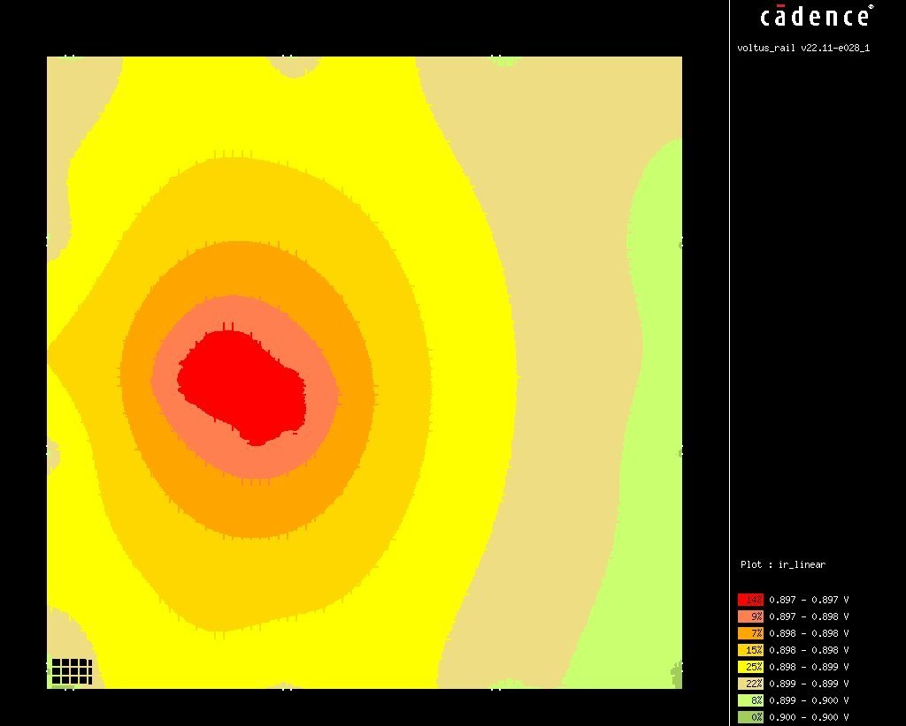
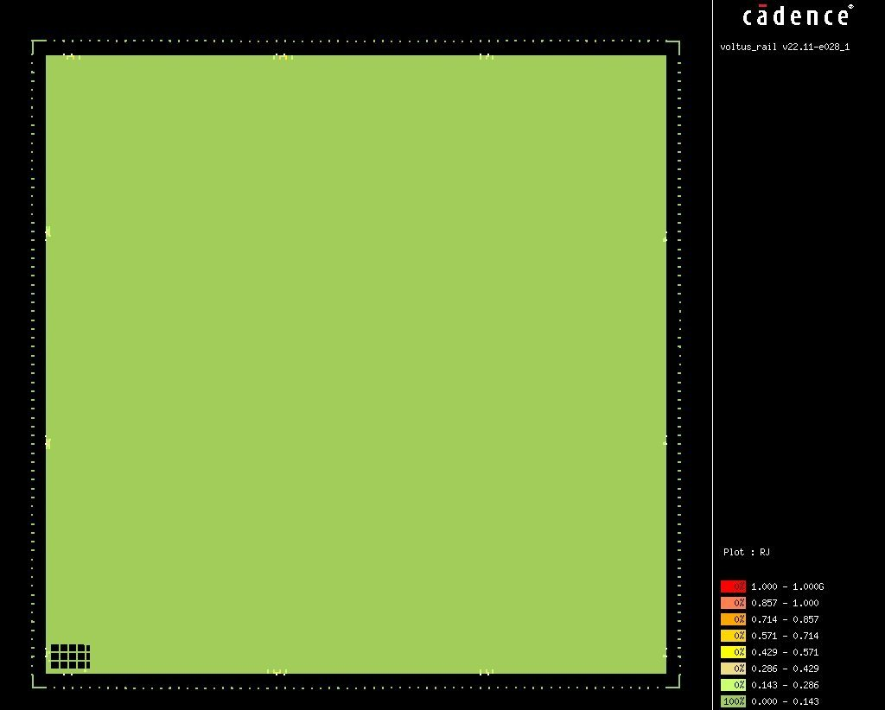
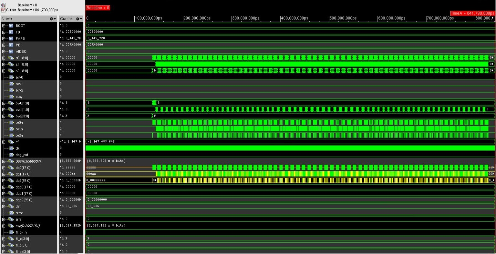
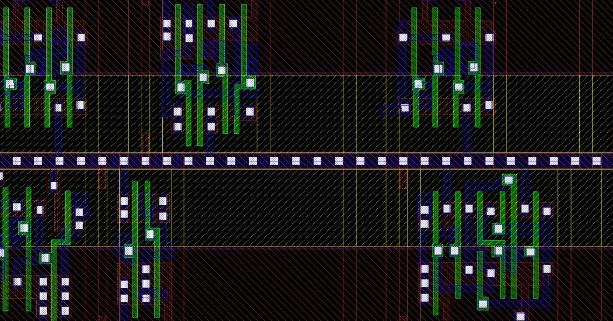

SQA V1 chip: accelerator with all buffers off-chip
The accelerator as a pad-limited chip: every engine buffer lives in external SRAM, with 280 pads on a 4.68 mm die.
Screenshot proofs
The Innovus, Tempus and Virtuoso pictures come from the database one step before the final layout (the final step only reconnected 18 pad pins after LVS); the Voltus maps are from the final layout.








Overview
V1 is the first of three versions of the SQA-Arc accelerator chip. It keeps almost no memory inside: the engine buffers go to three external synchronous SRAM chips, network data and results to a 32 MB SDRAM, and the boot image to a QSPI flash. A separate RISC-V controller chip (see the MCU page) sends it commands over a host link, and it drives a 1080p60 display.
The point of V1 is to learn what an off-chip memory architecture really costs: 232 signal pins, forwarded clocks for the SRAM banks, and a die whose size is set by the pad ring, not by the logic (the logic uses under 2 % of the core).
This is an academic practice design on Cadence's generic GPDK045 45 nm PDK. It is fully signed off in the Cadence tools but it has not been fabricated. The SRAM macros are my own placeholder models (behaviour, estimated timing / area / power, outline and pins), because the generic PDK has no memory compiler.
V1 keeps only one SRAM macro on chip (the pooling line buffer); see Memory design.
Headline numbers
Architecture
| Block | What it does |
|---|---|
| Accelerator core | Engines A / B / AUX + sequencer and DMAs; all large engine arrays on external ports (HLS version with latency-3 external memory) |
| SSRAM bank ports + arbiter | 3 external synchronous SRAM banks (18 / 8 / 24-bit data), each with a forwarded clock |
| SDRAM controller | 32 MB x32 SDR SDRAM at 100 MHz, with stream readers |
| Boot loader + QSPI flash reader | copies the network image from flash to SDRAM and starts automatically |
| Host-link slave + register block | commands from the RISC-V controller chip (12.5 MHz serial link) |
| Program fetch | operator descriptors fetched from SDRAM with prefetch |
| Display controller | 1080p60 RGB888 video from a 960 × 540 framebuffer, plus a text overlay (pixel clock 148.5 MHz) |
| Clock-domain crossing | reset synchronisers, synchronisers and async FIFOs between core and pixel clocks |
Key specifications
| Parameter | Value |
|---|---|
| Technology | GPDK045 (Cadence generic 45 nm PDK), gsclib045 standard cells, giolib045 I/O pads |
| Die size | 4.68 × 4.68 mm (pad-limited, 70 pads per side) |
| Core area | 4.18 × 4.18 mm |
| Pads | 280 = 232 signal + 48 power |
| Signal pins by interface | SSRAM banks 130, SDRAM 56, video 28, host link 7, QSPI flash 6, clocks + reset 3, test 2 |
| Cells | 94,952 after synthesis; 106,723 standard cells after P&R incl. clock tree |
| Synthesis area | 4.34 mm² including pads (pads 93 %) |
| Memories inside | 1 SRAM macro (pool line buffer, 6400 × 8, two-port) |
| Clocks | core 100 MHz, pixel 148.5 MHz |
| Supply / corners | 1.0 V nominal core library; signed off at 0.9 V / 125 C (slow, setup) and 1.1 V / 0 C (fast, hold) |
| Parts on the board | 7: V1 + RISC-V controller + 3 SSRAM + SDRAM + flash |
| Test network run (synbk3, RTL) | 69,524 cycles |
Design flow
All steps use Cadence tools on a university server; HLS and firmware builds ran on a PC.
- RTL design: Verilog RTL; the neural-network engines were generated with Vitis HLS from C++ and checked bit-exact against a Python golden model.
- RTL simulation: Xcelium (and Vivado xsim on the PC) with my own board models: SDRAM, sync SRAM, QSPI flash, UART, SD card, I2C, display capture.
- Synthesis: Cadence Genus to the gsclib045 standard cells, 100 MHz core clock, slow corner.
- Place and route: Cadence Innovus: pad ring, floorplan, power grid, placement, clock-tree synthesis, routing, post-route optimisation.
- Physical verification: Cadence Pegasus DRC with the full GPDK045 rule deck, and Pegasus LVS (layout against netlist).
- Static timing: Cadence Tempus, SI-aware, with extracted parasitics: setup in the slow corner, hold in the fast and slow corners, plus every design-rule check type (slew, capacitance).
- Power and rail analysis: Cadence Voltus: power with real gate-level activity, static IR drop, electromigration (EM) and dynamic IR drop.
- Gate-level sign-off simulation: The routed netlist simulated again in Xcelium, with and without the routed delays (SDF back-annotation, all timing checks on).
Results
| Check | Result |
|---|---|
| Pegasus DRC (full GPDK045 deck) | clean (36 foundry-deck hits on the first run, all fixed: via stacks and metal spacing); only the expected substrate soft checks |
| Pegasus LVS | MATCH (235 pins, 298,206 nets); LVS found 18 constant-output bond pads left floating, fixed |
| Tempus sign-off timing (SI on) | setup WNS +0.062 ns, hold WNS +0.030 ns, TNS 0, 0 violators of every check type (setup, hold, slew); 31 slew violators at the start were repaired |
| Power (Voltus, real activity, slow corner) | 5.85 mW |
| Static IR drop (budget 45 mV) | VDD ~3 mV (0.897 V minimum), VSS 3.1 mV: 15x margin |
| Electromigration (Voltus) | PASS: worst J / Jmax 0.560 (VDD), 0.508 (VSS); 0 pieces over the limit |
| Dynamic IR drop (budget 45 mV) | PASS: worst VDD drop ~26 mV, VSS bounce 28.6 mV |
| Post-route gate-level simulation | PASS: synbk3 network operator through the chip pins, 512 / 512 output bytes bit-exact, 69,529 cycles (RTL 69,524) |
| Gate-level simulation with routed delays (SDF) | PASS: 0 errors, 0 timing-check violations; 100 % of path delays and 99.7 % of timing checks annotated |
Problems solved
Forwarded-clock timing. Tempus first showed -1.82 ns on 40 SSRAM pins. The constraints timed the bank pins against the core clock, so the 1.86 ns clock-tree delay of the 4.68 mm die appeared only on the data side (Innovus hid this by adjusting I/O latency during clock-tree synthesis). The SRAMs are clocked by the chip's own forwarded clock, so I added a generated clock on each bank clock pin and timed the bank pins against it: 0 violators.
A real bug only LVS could find. 18 constant outputs (unused high address bits, SRAM control pins) had their bond pad unconnected: synthesis propagated the constant through the pad model and a tie cell inside the core drove the port. Simulation still passed. An ECO script reconnected the pads; LVS then matched.
Foundry DRC is not tool DRC. Innovus reported 0 DRC, but the full Pegasus deck found 36 violations (tall via stacks without aligned double cuts, wide-metal spacing at the pad ring). Fixed with targeted ECO rounds, re-checked every time with DRC, shorts, antenna, opens and timing.